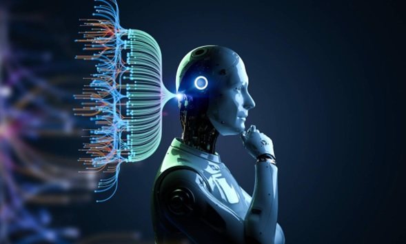

Historia de la Inteligencia Artificial

La historia de la inteligencia artificial (IA) se remonta a la antigüedad, con mitos y leyendas sobre autómatas y seres artificiales. Sin embargo, el campo de la IA como lo conocemos hoy comenzó a tomar forma en la década de 1950. En 1956, se celebró la conferencia de Dartmouth, donde se acuñó el término "inteligencia artificial" y se establecieron las bases para el desarrollo futuro del campo.
Los orígenes de la IA se remontan formalmente a la década de 1950, destacando la Conferencia de Dartmouth en 1956, donde se acuñó el término por primera vez. Durante sus primeros años, la disciplina experimentó épocas de gran optimismo seguidas de los llamados "Inviernos de la IA", periodos donde la financiación y el interés decayeron debido a las limitaciones del hardware de la época.
Sin embargo, con la explosión del poder computacional y la inmensa disponibilidad de datos (Big Data) en el siglo XXI, la IA experimentó un renacimiento. Hoy en día, hemos pasado de sistemas basados en reglas estrictas a modelos de aprendizaje profundo capaces de procesar lenguaje, reconocer imágenes y tomar decisiones complejas de manera autónoma.